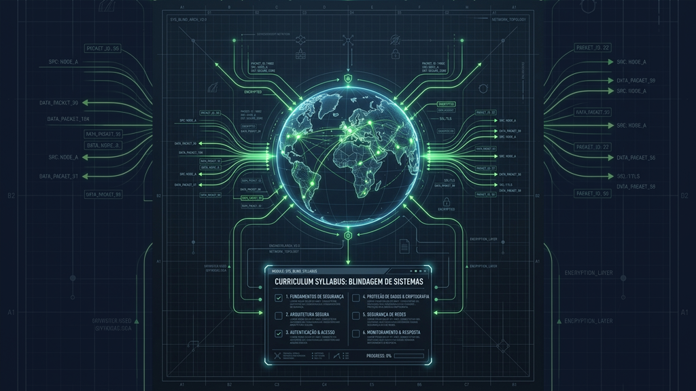
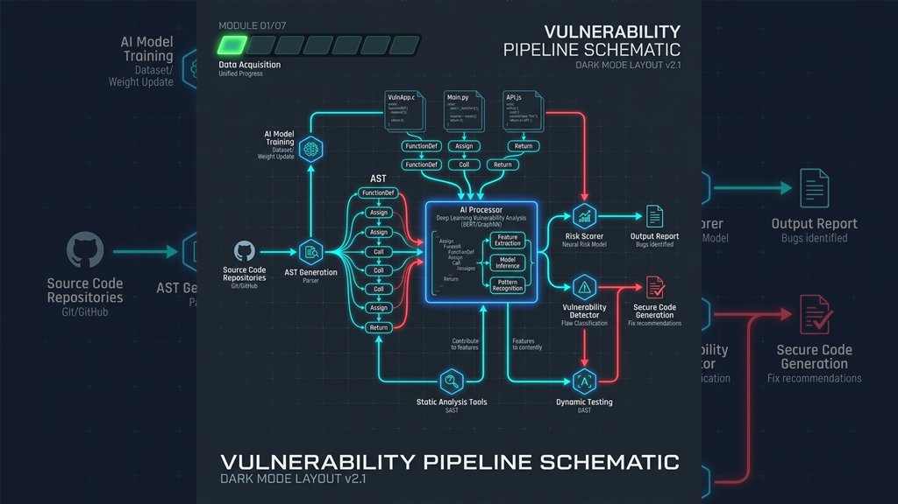
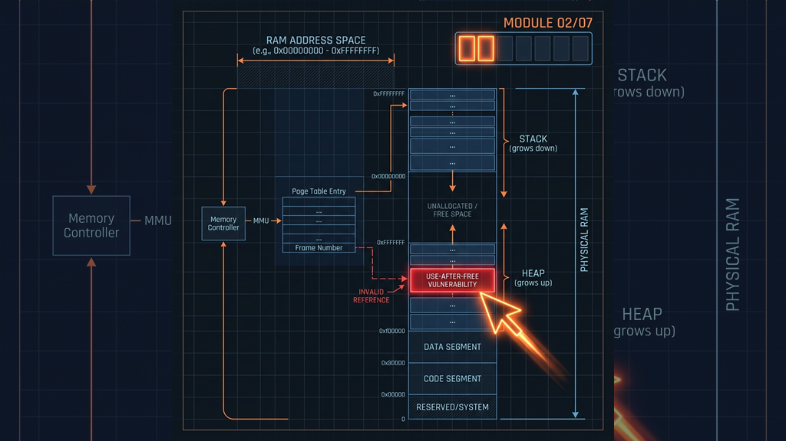
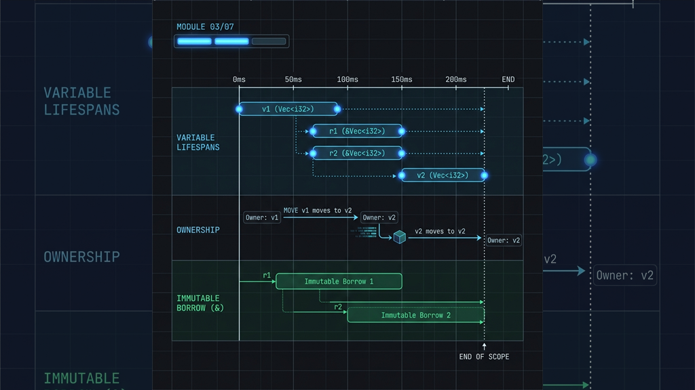
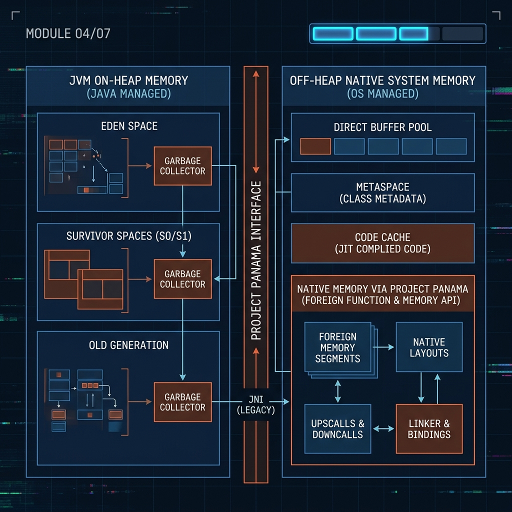
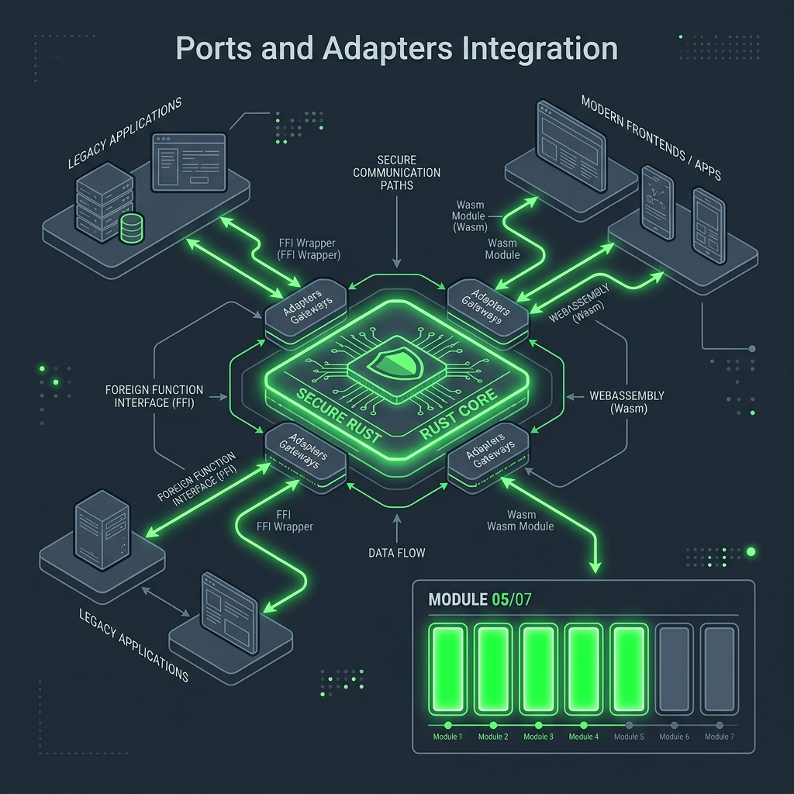
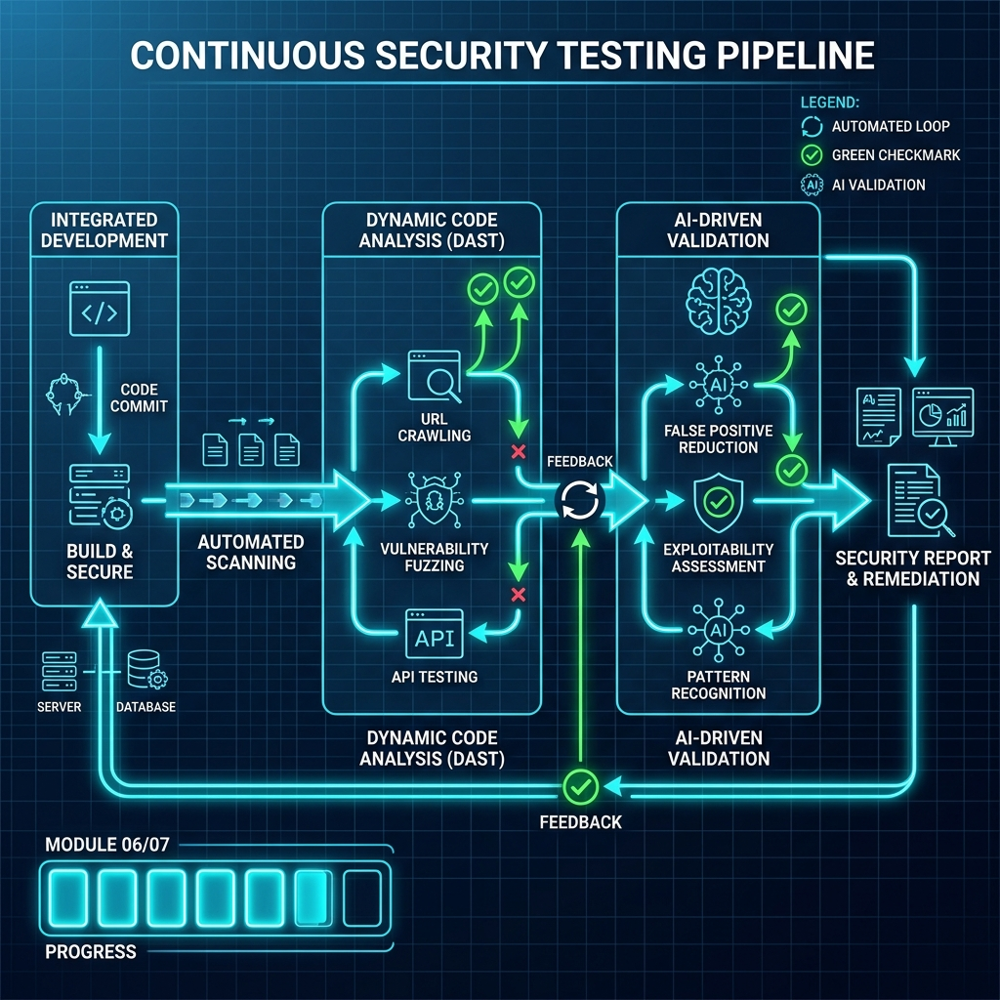
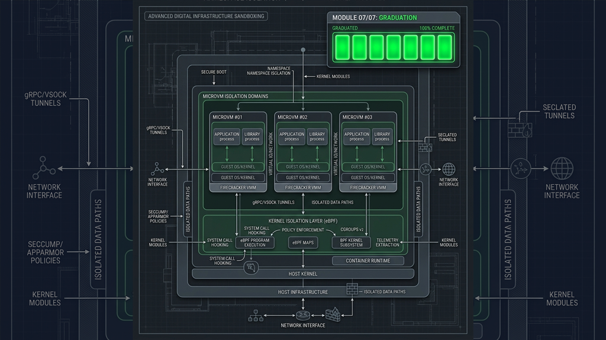

Pós-Graduação Prática em Engenharia de Risco
Série: Blindagem de Sistemas — Chamada e Índice

Vídeo demonstrativo: Blindagem de Sistemas — Teaser da Pós-Graduação Prática.
O mercado de desenvolvimento de software mudou permanentemente. IAs generativas de última geração já não são apenas ferramentas de produtividade para escrever código básico; elas se transformaram em plataformas capazes de auditar, mapear árvores de sintaxe inteiras e encontrar portas de entrada para invasões críticas em sistemas corporativos em questão de horas.
Nesse novo cenário de ameaças rápidas, a antiga mentalidade de apenas remendar falhas pontuais faliu. O desenvolvedor sênior contemporâneo precisa dominar a engenharia de riscos e a gestão mecânica de memória — as fundações sobre as quais toda a nossa infraestrutura de servidores, clusters de bancos de dados e gateways opera.
Esta página marca o início e funciona como o índice da nossa pós-graduação prática em formato de série: Blindagem de Sistemas. Ao longo de sete capítulos semanais veiculados nas quintas-feiras de novembro e dezembro de 2027, faremos uma jornada com o rigor de um livro-texto de engenharia de software.
Aviso de Concorrência e Risco: Todos os incidentes reais descritos nas lições a seguir são estudos de caso simulados sob condições controladas de laboratório. Eles representam cenários práticos e ocorrências realistas que podem surgir no dia a dia da produção de qualquer empresa tech, desenhados especificamente para fins pedagógicos de mitigação de vulnerabilidades.
"Minha experiência prática inclui o diagnóstico de incidentes críticos envolvendo chamadas nativas, corrupção de memória e falhas graves de isolamento em produção. Nesta pós-graduação, nossa filosofia une a engenharia à pressão real de entrega: em vez de defender a reescrita utópica de sistemas legados inteiros (o que é financeiramente inviável), adotamos uma abordagem de mitigação cirúrgica — blindando o código existente com anteparas de isolamento externas, eBPF e integrações híbridas progressivas em Rust."
Para nivelar a base técnica de todos os alunos, cada módulo conta com uma Lição de Apoio e Nivelamento Prático publicada no primeiro sábado subsequente ao lançamento, traduzindo termos abstratos (como AST, heap ou syscalls) por analogias físicas simples e ensinando a configurar a inteligência artificial do navegador como tutor de estudos de plantão.
Recomendação de Estudo: Como os artigos são densos (com leitura superior a 10 minutos), divida seu esforço: reserve um primeiro momento para absorver o incidente real e as analogias lógicas, e um segundo momento concentrado para analisar o código e resolver os exercícios.
Cada episódio contará com um cenário real de incidentes de produção, o diagnóstico estrutural do código, a estratégia aplicada de mitigação em baixo nível, além de um resumo de aprendizado e um glossário de trincheira para traduzir os jargões complexos de forma didática para executivos e leigos.
O Desafio: Para quem é este guia?
Esta pós-graduação foi desenhada tanto para o líder que gerencia riscos de tecnologia quanto para o desenvolvedor que deseja compreender e manipular os limites físicos do hardware. Não exigimos que você seja um especialista em Rust ou cibersegurança ofensiva; buscamos mentes curiosas e obstinadas. Os únicos pré-requisitos reais para iniciar a jornada são:
- Para Desenvolvedores (Trilha Pro): Noções básicas de programação em qualquer stack de mercado (como Java, Node.js, C# ou Go) e a curiosidade de entender como seu código de alto nível interage com a memória física do servidor. Se você nunca viu Rust ou C, este guia foi desenhado para ser a sua rampa de acesso definitiva.
- Para Líderes e Gestores (A Ilusão da Trilha Executiva): Desenhada especificamente para quem assume que gerenciar riscos consiste apenas em assinar checklists burocráticos ou olhar gráficos coloridos em apresentações rápidas. Se você tiver a audácia de ler os artigos inteiros em vez de apenas delegar, entenderá finalmente por que sua infraestrutura quebra e por que a saúde de seus sistemas não se resolve em salas de reunião.
Prepare-se para ver a engenharia de software sob uma perspectiva muito mais palpável e desafiadora. A infraestrutura que sustenta as suas aplicações em produção esconde segredos mecânicos fascinantes. Vamos desvendá-los.
Grade Curricular e Grade de Aulas

O Ataque Autônomo: Auditoria e Exploração com Inteligência Artificial

A Praga Silenciosa: Use-After-Free e Bugs de Memória

O Cinto de Segurança do Rust: Garantias do Compilador

A Ilusão da Sandbox: JVM Off-Heap e Pontes de Risco

A Rampa de Alto Nível: Integrando Rust no Ecossistema Legado

Copilotos de Defesa: Fuzzing e Análise Dinâmica com IA

Defesa de Tese: Contenção de Danos e Soberania Digital
Lançamento da Série: Módulos técnicos semanais publicados às quintas-feiras, de 18/11/2027 a 30/12/2027. As respectivas lições de apoio e nivelamento prático serão publicadas nos sábados subsequentes ao lançamento de cada módulo.
— Comece a pós-graduação: Módulo 01: O Ataque Autônomo.